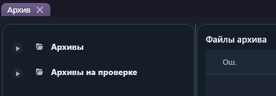
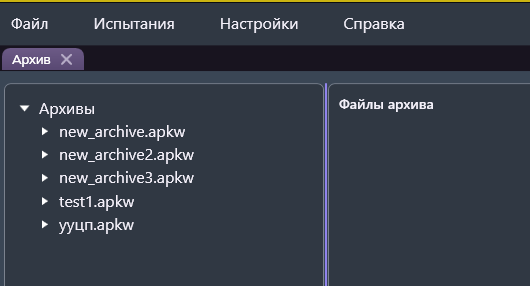
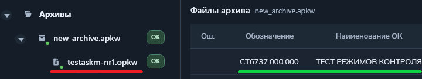

Функция «Открыть архив»
Функция открывает рабочее окно для просмотра архивов и управления ими.
Путь и вызов
Нахождение в программе
Верхнее меню → "Архив" → "Открыть архив"Работа после открытия
- Разверните узел «Архивы» в левой части окна.
- Выберите нужный архив. Его файлы появятся в дереве и в таблице справа.
- Выберите файл программы контроля, чтобы просмотреть его содержимое.

Если архивы уже созданы или импортированы, они отображаются в дереве:

Если архивов нет, дерево будет пустым:
